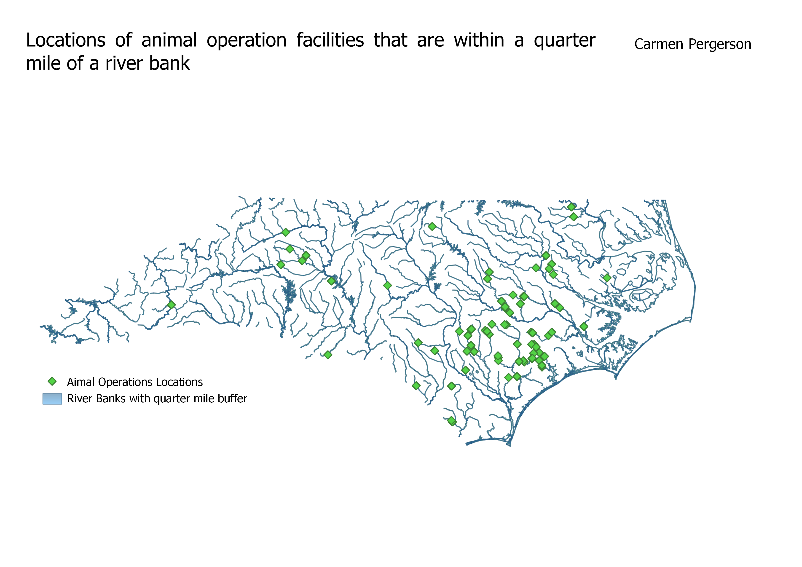

The locations of animal operations facillities that are within a quarter mile of a nearby river bank.
I chose to make a map displaying the animal operations that are within a quarter mile to a river bank to display the oppurtunites for water contamination from runoff of the animal operation facillities. Runoff from farms, particularly animal operations are the number one cause of water contamination in America.

I used buffers around the rivers to indicate a quarter mile border. I also used clipping to only show the animal operation facilities that fall within that quarter mile buffer.
Data set made by me
Data set made
Animal Operation Shapefile
Data used
Riverbank Shapefile
Data used